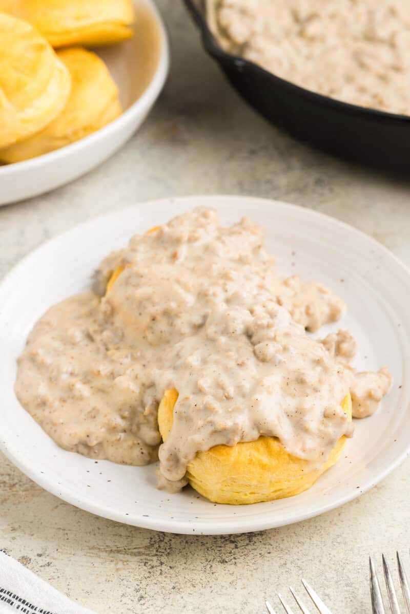
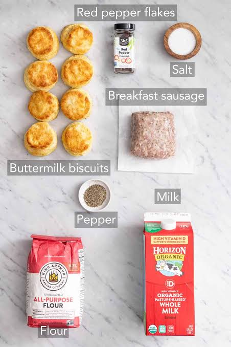

Biscuits and Gravy

Description
Classic Southern biscuits and gravy pairs fluffy homemade or refrigerated biscuits with a rich, savory breakfast sausage gravy. A staple breakfeast food that is good both homemade and to dine out for.
This biscuits and gravy recipe uses jumbo buttermilk biscuits and pork sausage crumbles for a hearty, family-favorite breakfast that's ready in just 15 minutes.
ingredients

- 1 (16 ounce) can of biscuits
- 1 (9.6 ounce) package of pork sausage
- 1/4 cup flourAll-purpose flour
- 2 1/2Milk
- Salt and Pepper
Steps
- Preheat the oven to 350 degrees F (175 degrees C).
- Arrange biscuits 1 to 2 inches apart on an ungreased cookie shee then bake in the preheated oven until golden brown, about 13 to 15 minutes.
- Meanwhile, cook sausage in a large skillet over medium heat until thoroughly heated, stirring frequently, about 5 to 6 minutes.
- Stir in flour until well combined
- Gradually add milk, stirring continuously, until the gravy thickens and comes to a boil. Reduce heat to medium-low; simmer and stir for 2 more minutes. Season to taste with salt and pepper.
- Put biscuits on plate and top with gravey. Enjoy!
Home